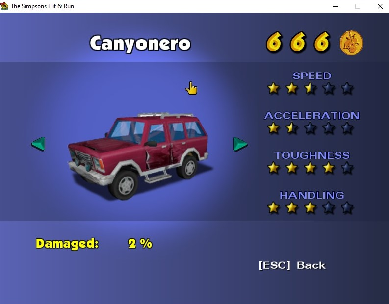
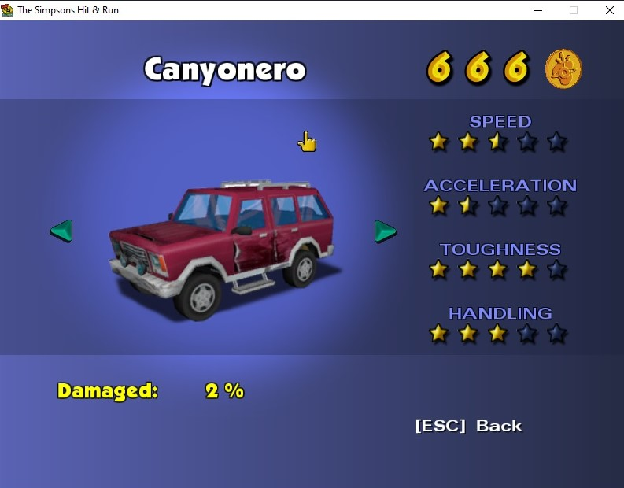
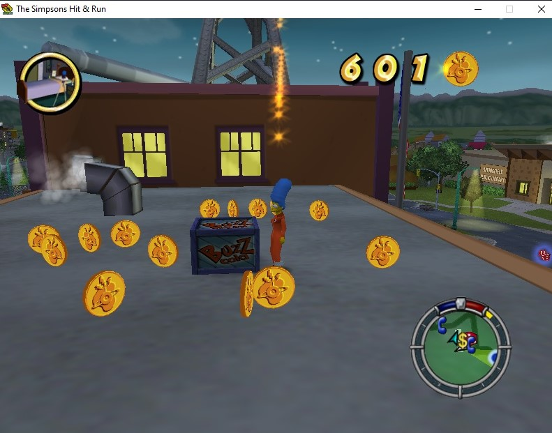

Springfield: The Simpsons Hit & Run
Reglas del Juego
Simpsons Hit & Run es un juego de la serie popular animada "Los Simpsons" este juego esta ambientado en la ciudad de Springfield, la misma de la serie. En los diferentes niveles eres un personajes diferente y se situan en la misma ciudad pero en diferentes lugares de esta


En el juego puedes explorar las calles de Springfield, en donde puedes encontrar lugares de la serie como las Hamburguesas Krusty, Lard Lad Donuts, entre otras.


El objetivo del juego es completar las misiones que te pediran diferentes personajes de la serie para así poder avanzar de nivel.
 


Estas misiones las puedes completar usando diferentes autos, los puedes cambiar en los telefonos y tambien puedes conseguir nuevos ya sea comrandolos o ganandolos por medio de carreras

Tambien puedes comprar y cambiar de ropa en los signos $ que comunmente estan dentro de tiendas o casas
